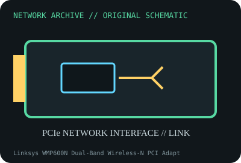

[ MODEL-SPECIFIC NETWORK HARDWARE ]
Linksys WMP600N Dual-Band Wireless-N PCI Adapter
Legacy dual-band 802.11n desktop PCI WLAN adapter. Confirm exact product label and revision before applying specifications.

IDENTIFICATION: Confirm manufacturer PID, hardware revision, device ID or module suffix. Nominal standards/link rates are not measurements of payload performance.
Exact specifications and compatibility
| Dedicated subcategory | Legacy networking adapters |
|---|---|
| Exact product/model | Linksys WMP600N Dual-Band Wireless-N PCI Adapter |
| Bus, ports and physical interface | 32-bit PCI card; dual-band radio and two external RP-SMA antennas (package/region may vary). |
| PHY, radio or protocol | IEEE 802.11a/b/g/n; dual-band 2.4/5GHz; spatial-stream rate depends on exact card revision and AP configuration. |
| Nominal rate (not measured) | Advertised N-class link rates are PHY maxima and band-specific; no measured application result claimed. |
| Measured throughput | No measured benchmark is claimed for a physical specimen. A valid result must record host/peer, link partner, media/cable, driver/firmware, traffic pattern, test tool and duration. |
| Drivers, OS and firmware | Linksys/Cisco Connect support contains legacy Windows drivers for listed revisions; Linux driver support depends on chipset and kernel. |
| Compatibility | Requires standard PCI slot, two correctly attached antennas and AP using supported band/channel/security. Confirm WPA/security compatibility with legacy client. |
| Variant warning | WMP600N hardware revisions differ in radio/chipset; do not infer chipset/driver from model name alone. Record version label before download. |
Model and revision notes
WMP600N hardware revisions differ in radio/chipset; do not infer chipset/driver from model name alone. Record version label before download.
Linksys/Cisco Connect support contains legacy Windows drivers for listed revisions; Linux driver support depends on chipset and kernel.
Requires standard PCI slot, two correctly attached antennas and AP using supported band/channel/security. Confirm WPA/security compatibility with legacy client.
Archival, ESD and preservation notes
Preserve both antennas, brackets and version label. Avoid strain on RP-SMA connectors; remove power before installation and store ESD-safe.
Document source URL, access date, document revision and specimen label/condition. Preserve without credentials or private configuration.
Primary manufacturer and standards sources
- Linksys WMP600N product and support documentationPrimary manufacturer or standards documentation; verify exact SKU and host revision.
- Linksys legacy downloads portalPrimary manufacturer or standards documentation; verify exact SKU and host revision.
- IEEE 802.11 working group standardsPrimary manufacturer or standards documentation; verify exact SKU and host revision.
Manufacturer statements cover the named part or its documented product family; the exact labeled revision and vendor compatibility list take precedence.